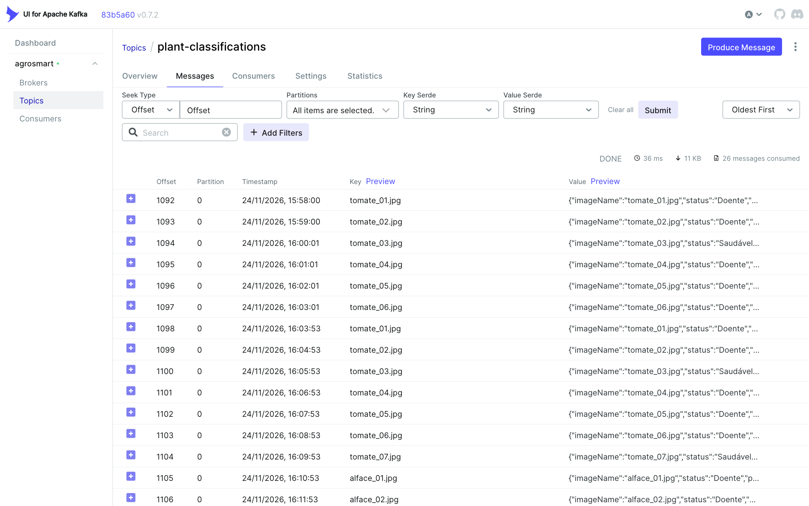
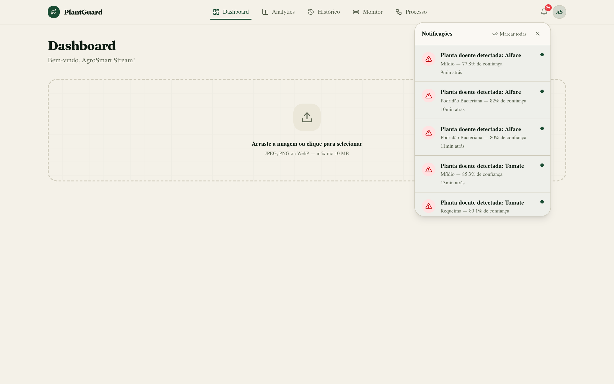
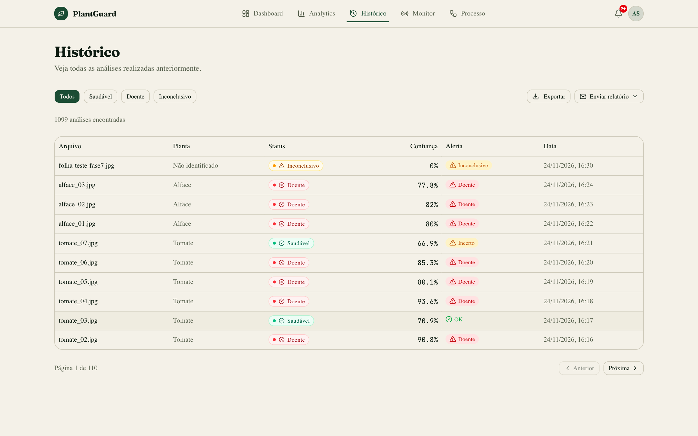
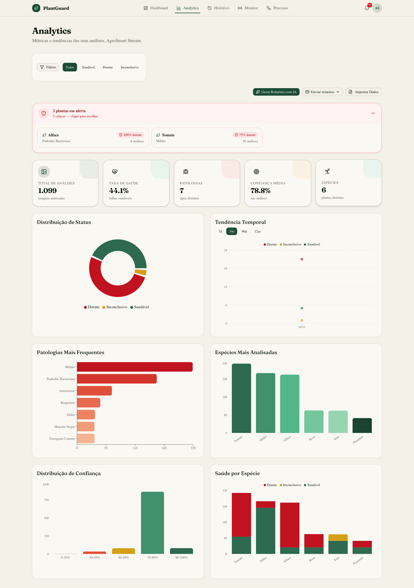
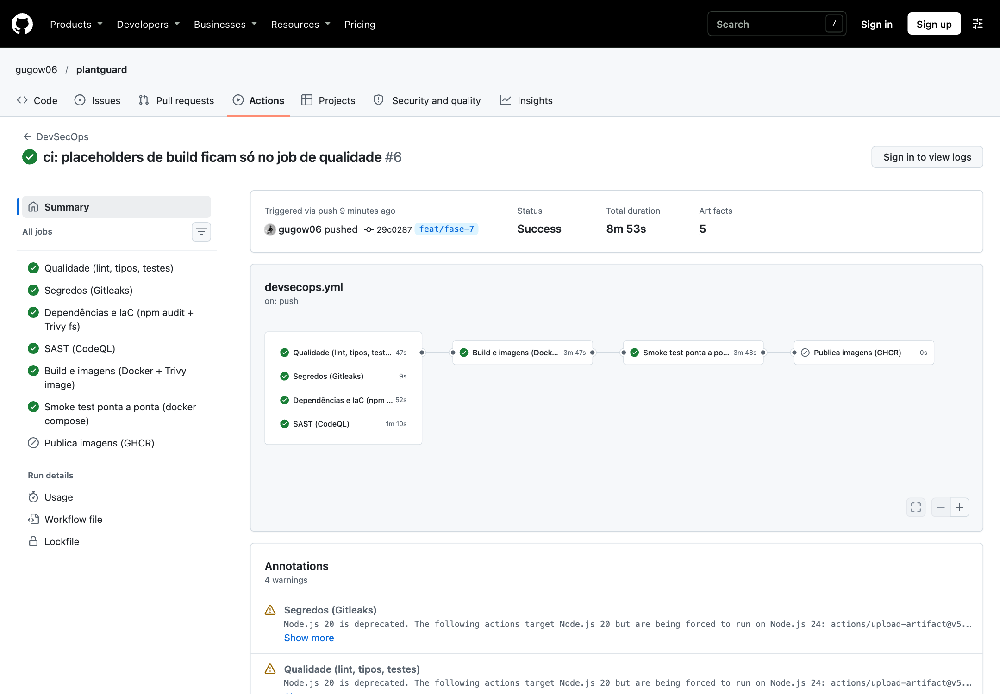
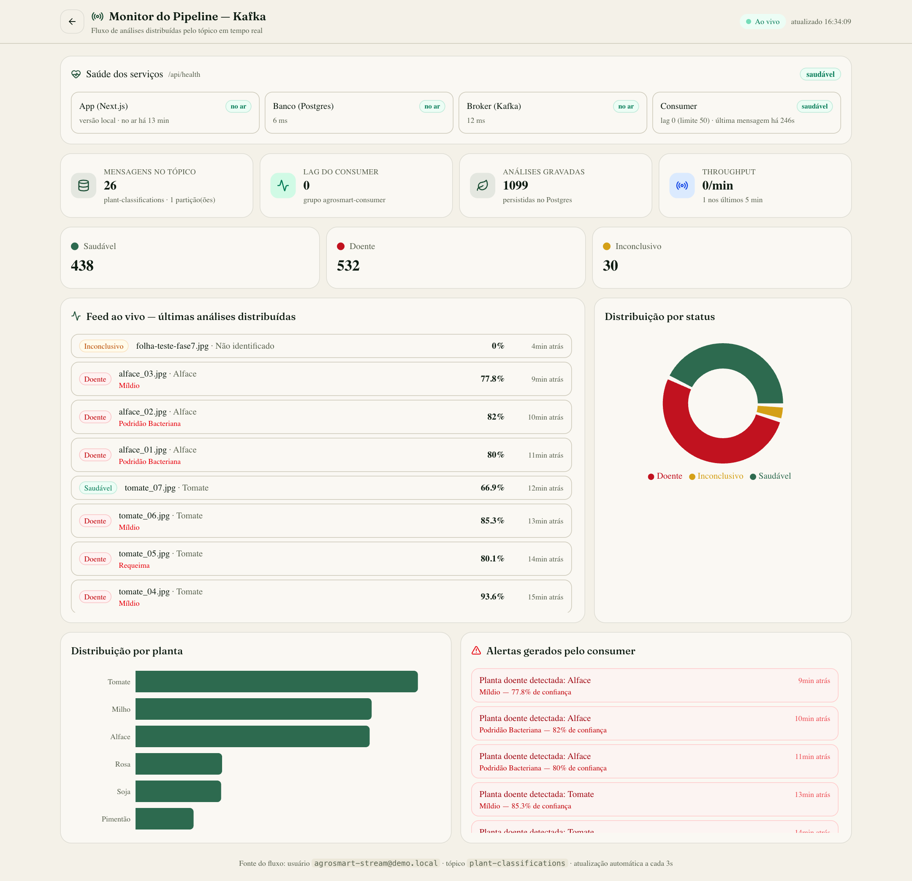
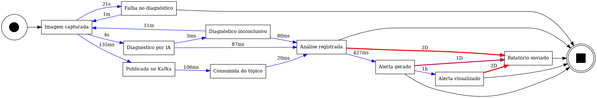
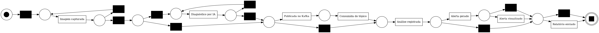
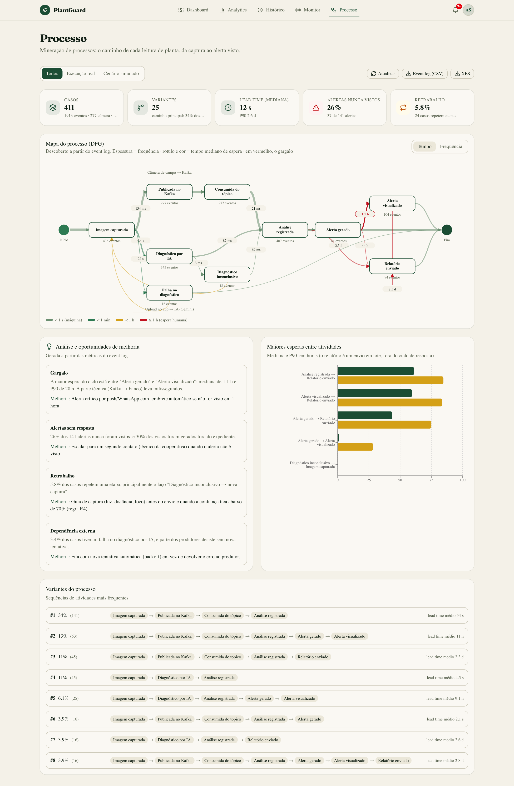

Documentação final da plataforma PlantGuard: arquitetura, execução ponta a ponta, pipeline DevSecOps, monitoramento, mineração de processos e visão de produto.
Uma plataforma que recebe imagens de plantas — do celular do produtor ou de câmeras no campo —, diagnostica doenças com IA, decide automaticamente quando é preciso agir e avisa quem precisa agir. E mede o próprio processo para descobrir onde a resposta demora.
A arquitetura consolida as sete fases: o app Next.js (interface + API), o diagnóstico com Gemini, as regras de decisão, o streaming com Kafka, o banco único em PostgreSQL e, nesta fase, saúde, event log e o pipeline DevSecOps. Tudo sobe com docker compose.
| Componente | Tecnologia | Papel |
|---|---|---|
| Interface + API | Next.js 16, React 19, NextAuth v5 | Upload, dashboard, analytics, histórico, monitor, processo; login por e-mail/senha e Google |
| Diagnóstico | Google Gemini 2.5 Flash | Status, espécie, patologia, confiança e tratamento a partir da foto; relatório de IA do campo |
| Motor de regras | TypeScript puro (testado) | R1 doença · R2 ≥ 50% doentes (crítico) · R3 mesma patologia ≥ 3× · R4 saudável com confiança ≤ 70% |
| Streaming | Apache Kafka 3.9 (KRaft), kafkajs | Producer simula câmeras; consumer grava análise, alerta e event log |
| Banco | PostgreSQL 16 + Prisma 7 | Usuários, análises, notificações e ProcessEvent (event log) |
| Observabilidade | /api/health, /monitor, Kafka UI, logs JSON | Saúde de app/banco/Kafka/consumer, lag e throughput a cada 3 s |
| Processo | process-mining.ts + pm4py | DFG, variantes, gargalos e conformidade |
| Entrega | Docker, GitHub Actions, GHCR | Build, segurança, teste ponta a ponta e publicação das imagens |
O consumer grava nas mesmas tabelas do app: dashboard, regras e alertas refletem o stream sem código extra.
Câmeras publicam mesmo com o app fora; o consumer retoma do último offset — testado no pipeline derrubando o Kafka.
caseId, capturedAt e publishedAt viajam no payload: o producer não precisa do banco e o event log fica completo.
ok, degraded (Kafka fora: o app segue atendendo) e down (banco fora: HTTP 503).
Com docker compose up, os sete serviços sobem saudáveis. O producer publica leituras de campo no Kafka; o consumer grava cada leitura, aplica a decisão e cria o alerta; o app mostra tudo em tempo real. Em paralelo, o produtor pode enviar uma foto para o Gemini.
data/sample-plants.csv (imagens já classificadas na borda) e publica uma mensagem JSON por leitura no tópico plant-classifications, com variação de confiança e horário atual.agrosmart-consumer) grava a Analysis no Postgres e registra os eventos do caso. No upload, a API valida (Zod, rate limit), chama o Gemini e grava o resultado.
plant-classifications (Kafka UI).{ "caseId": "56204bcf-718f-…",
"capturedAt": "2026-11-24T19:24:56.811Z",
"imageName": "alface_03.jpg",
"status": "Doente",
"plantType": "Alface",
"pathology": "Míldio",
"confidence": 77.8,
"recommendations": "Aplicar fungicida à base
de fosetil-alumínio. Aumentar aeração." }
{ "service": "consumer",
"event": "message_persisted",
"analysisId": "cmwv33gqb001n…",
"status": "Doente",
"alert": true,
"pipelineLatencyMs": 26 }



Cada push e pull request dispara o workflow .github/workflows/devsecops.yml no GitHub Actions. Quatro verificações rodam em paralelo; só se todas passarem o pipeline constrói as imagens, varre as imagens, sobe a stack inteira e — na main — publica as imagens no GitHub Container Registry.
| Requisito | Como o pipeline atende |
|---|---|
| Build | next build dentro do Dockerfile multi-stage (deps → builder → runner standalone) e imagem de streaming |
| Execução via container | Job Ponta a ponta: docker compose up --wait com os 7 serviços, scripts/smoke-test.sh confirma que uma mensagem atravessa producer → Kafka → consumer → Postgres → app; depois derruba o Kafka, verifica degraded e a recuperação |
| Qualidade de código | ESLint (regras do Next e do React Compiler), checagem de tipos, 45 testes unitários com cobertura mínima de 70% (atual: 96%) e resumo publicado no run |
| Vulnerabilidades | Gitleaks (segredos no histórico), npm audit (falha em high/critical), Trivy fs (dependências, Dockerfiles, segredos), CodeQL (SAST) e Trivy nas imagens finais; relatórios SARIF na aba Security |
App, streaming e análise rodam como usuário sem privilégio.
O npm embutido na imagem base trazia 10 CVEs altas; o runtime só precisa do node.
O container do app consulta /api/health; o compose só libera dependentes saudáveis.
O primeiro scan desta fase encontrou problemas reais. Todos foram corrigidos e documentados em docs/fase7/evidencias/pipeline/.
| Achado | Ferramenta | Antes | Correção | Depois |
|---|---|---|---|---|
| RCE não autenticado no Next.js 16.1.6 e outras 43 vulnerabilidades (5 críticas) | npm audit, Trivy fs | 44 (5 críticas) | Next 16.4.6, next-auth beta.32, zod 4.6.7; remoção do nodemailer (não usado); override de effect | 0 |
| CVEs do npm embutido na imagem base | Trivy image | 10 HIGH | Remoção de npm/npx/corepack do runtime | 0 |
| Containers como root (streaming e análise) | Trivy (DS002) | HIGH | USER node / USER analyst | ok |
| Injeção de HTML nos e-mails (dados vindos de CSV importado) | revisão de código | sem escape | Função esc() em todos os campos do usuário | ok |
| Banco SQLite versionado com contas | revisão | dev.db no repo | Removido e ignorado (*.db) | ok |
| Segredo com valor padrão no compose | revisão | default | NEXTAUTH_SECRET obrigatório | ok |
| Segredos no histórico git | Gitleaks | 20 commits varridos — nenhum vazamento | ||

b038499, o run seguinte passou.O sistema roda continuamente (producer em modo contínuo, consumer com restart: unless-stopped) e é acompanhado em três camadas.
Postgres (SELECT 1), Kafka (offsets), lag do consumer e idade da última mensagem. Responde ok, degraded ou down (HTTP 503). Usado pelo healthcheck do Docker e pelo pipeline.
A cada 3 s: saúde por serviço, mensagens no tópico, lag, análises gravadas, throughput, feed ao vivo e alertas.
Producer e consumer escrevem JSON com caseId, evento e latência do pipeline; docker compose logs -f e Kafka UI completam a visão.

{ "status": "ok",
"services": {
"database": { "status": "up" },
"kafka": { "status": "up" },
"consumer": {
"status": "ok", "lag": 0 } },
"issues": [] }
{ "status": "degraded",
"services": {
"database": { "status": "up" },
"kafka": { "status": "down" } },
"issues": ["Broker Kafka indisponível:
o streaming está parado."] }
| Pergunta | Onde olhar |
|---|---|
| Está tudo no ar? | curl localhost:3000/api/health ou o cartão "Saúde dos serviços" no /monitor; docker compose ps mostra healthy |
| O stream está fluindo? | Mensagens no tópico, throughput e lag no /monitor; mensagens no Kafka UI (:8080) |
| O que aconteceu com uma leitura? | docker compose logs consumer | grep <caseId> e o caso no event log (/process) |
| Onde o processo demora? | Página /process (seção 5) |
STREAM_MAX_MESSAGES=0) e o consumer reinicia sozinho (restart: unless-stopped)./api/health passa a degraded em 2–3 s e o painel fica amarelo; uploads continuam funcionando.Aplicamos mineração de processos ao próprio PlantGuard. Um caso é uma leitura de planta; cada etapa grava um evento com caso, atividade, horário e recurso na tabela ProcessEvent. O event log é exportado em CSV ou XES (padrão IEEE 1849) e analisado de duas formas independentes: pela página /process (TypeScript) e por um script com pm4py. Os números das duas batem.
| case_id | activity | timestamp | resource | channel |
|---|---|---|---|---|
| 56204bcf-… | Imagem capturada | 2026-11-24T19:24:56.811Z | camera-campo | camera |
| 56204bcf-… | Publicada no Kafka | 2026-11-24T19:24:56.811Z | producer | camera |
| 56204bcf-… | Consumida do tópico | 2026-11-24T19:24:56.818Z | consumer | camera |
| 56204bcf-… | Análise registrada | 2026-11-24T19:24:56.837Z | postgres | camera |
| 56204bcf-… | Alerta gerado | 2026-11-24T19:24:56.840Z | motor-de-regras | camera |
| sim-7-0052 | Imagem capturada | 2026-11-19T15:26:07.980Z | produtor | upload |
| sim-7-0052 | Diagnóstico por IA | 2026-11-19T15:26:10.557Z | gemini | upload |
| sim-7-0052 | Diagnóstico inconclusivo | 2026-11-19T15:26:10.561Z | gemini | upload |
| sim-7-0052 | Imagem capturada | 2026-11-19T15:38:08.885Z | produtor | upload |
| sim-7-0052 | Diagnóstico por IA | 2026-11-19T15:38:12.548Z | gemini | upload |
| sim-7-0052 | Análise registrada | 2026-11-19T15:38:12.588Z | postgres | upload |
| sim-7-0052 | Alerta gerado | 2026-11-19T15:38:13.242Z | motor-de-regras | upload |
source = simulado, com falhas da IA, nova foto após diagnóstico inconclusivo, picos de atraso do consumer e alertas fora do expediente. A análise abaixo usa o cenário simulado.


| # | Casos | Sequência |
|---|---|---|
| 1 | 34,8% | Captura → Publicada no Kafka → Consumida → Análise registrada |
| 2 | 13,3% | … → Análise registrada → Alerta gerado → Alerta visualizado |
| 3 | 11,3% | … (câmera) → Análise registrada → Relatório enviado |
| 4 | 11,3% | Captura → Diagnóstico por IA → Análise registrada |
| 5 | 6,3% | Captura → Diagnóstico por IA → Análise registrada → Alerta gerado → Alerta visualizado |
As 5 variantes mais comuns cobrem 76,6% dos casos; as outras 20 são as exceções que interessam (retrabalho, falhas, alertas ignorados).
| Problema | Melhoria proposta | Indicador |
|---|---|---|
| Alerta demora a ser visto | Push/WhatsApp para alerta crítico (R2) com lembrete após 1 h e escalonamento para o técnico da cooperativa | Mediana/P90 de alerta → visto; % nunca vistos |
| Diagnóstico inconclusivo | Guia de captura (luz, distância, foco) antes do envio e quando a confiança < 70% (R4) | % de casos com o laço de retrabalho |
| Falha da IA | Fila com nova tentativa automática (backoff) e cache de diagnósticos | % com falha; casos sem desfecho |
| Atraso do consumer | Alarme quando o lag passa do limite (já exposto em /api/health) e mais partições/consumers | Lag; espera publicada → consumida |
Doenças de plantas destroem parte relevante da produção agrícola todos os anos. O diagnóstico depende de um agrônomo que nem sempre está por perto, e quando a doença é vista a olho nu já se espalhou pelo talhão. O pequeno e o médio produtor são os que mais perdem.
Um agrônomo digital que não dorme: o produtor fotografa, ou as câmeras enviam leituras sozinhas, e em segundos a IA diz qual doença a planta tem e o que fazer. O sistema cruza as análises, aplica regras de decisão e avisa antes que a doença vire prejuízo.
Regras R1–R4 dizem quando intervir.
Fluxo contínuo do campo via Kafka, não fotos soltas.
Sabemos onde o produtor demora a agir.
Pipeline DevSecOps desde o primeiro commit.
| Segmento | Dor | O que o PlantGuard entrega |
|---|---|---|
| Pequeno e médio produtor (hortaliças, frutas) | Sem agrônomo dedicado; descobre a doença tarde | Diagnóstico em segundos no celular e alerta automático |
| Cooperativas | Poucos técnicos para centenas de associados | Visão consolidada, alertas críticos e relatórios |
| Agrônomos e consultorias | Muitas propriedades para acompanhar | Triagem automática e histórico por cultura |
Assinatura SaaS freemium · API por análise · licença para cooperativas · analytics premium
Chamadas ao Gemini · infraestrutura (banco, Kafka) · engenharia · aquisição
Sensores de clima para prever risco · alertas por WhatsApp · piloto com uma cooperativa
# 1. Configuração (defina NEXTAUTH_SECRET; GEMINI_API_KEY é opcional) cp infra/.env.example infra/.env # 2. Sobe banco, Kafka, app, producer e consumer (espera ficarem saudáveis) docker compose -f infra/docker-compose.yml up -d --build --wait # 3. Confere o fluxo ponta a ponta scripts/smoke-test.sh # 4. Cenário de processo simulado (opcional) e análise com pm4py npm run process:simulate docker build -t plantguard-process-mining analysis/process-mining docker run --rm -v "$PWD":/work plantguard-process-mining \ docs/fase7/processo/event-log.csv docs/fase7/processo simulado
| Endereço | O que é |
|---|---|
http://localhost:3000 | App — login demo agrosmart-stream@demo.local / stream123 |
/monitor · /process | Monitor do pipeline e mineração de processos |
/api/health | Saúde da plataforma (JSON) |
http://localhost:8080 | Kafka UI |
src/app/ páginas e rotas da API (analyze, health, process, stream/monitor…) src/lib/ regras, analytics, saúde, event log, mineração de processos (testados) infra/ docker-compose, producer/consumer Kafka, simulador de processo analysis/ análise de processos com pm4py (container) scripts/ smoke test ponta a ponta .github/workflows/ pipeline DevSecOps docs/fase7/ plano, arquitetura, evidências, processo, roteiro dos vídeos
| Ferramenta | Uso |
|---|---|
| Google Gemini 2.5 Flash | No produto: diagnóstico das imagens e relatório de IA do campo |
| Claude Code (Anthropic) | Assistente de desenvolvimento: código e revisão, testes, pipeline, correções de segurança, análise de processos, documentação e roteiro dos vídeos |